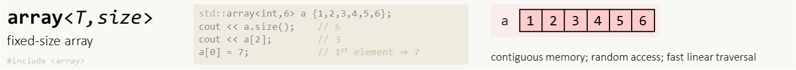
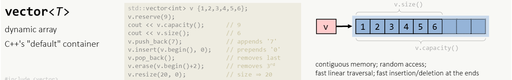
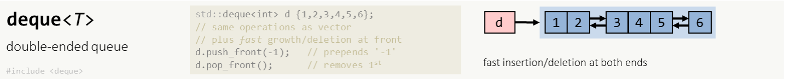
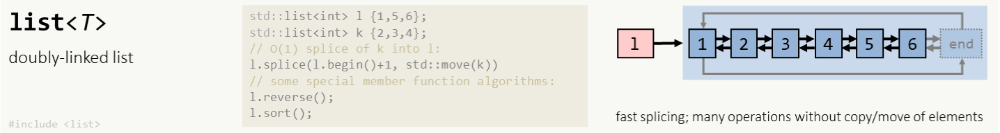
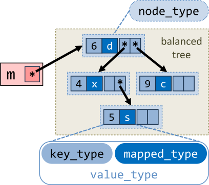

C++容器
概述
标准容器都是模板类型，可以指定自定义的数据类型。
容器分为三类：序列容器、关联容器、容器适配器。
序列容器保持元素添加的顺序，允许指定插入元素的位置。序列容器类型包括，vector、list和deque（双端队列）。string类具有与序列容器相同的基本操作。
关联容器的元素以预先给定的顺序插入，例如排序顺序，分为两个子类：map(dictionary)和set。map(dictionary)由key/value组成，其中key用于排序。set中的元素按升序排列。
容器适配器包括：stack，queue，priority_queue。容器适配器不支持迭代，不能用于STL算法。
迭代器
标准库为每一种标准容器定义了迭代器类型container<type>::iterator（常量迭代器类型container<type>::const_iterator）。
container.begin(); // → @first_element
container.end(); // → @one_behind_last_element
std::begin(container); // → @first_element
std::end(container); // → @one_behind_last_element
使用
@pos代表迭代器。
rbegin()，rend()用于反向迭代。
const_iterator类型只能用于读取容器内元素，但不能改变其值，返回迭代器的函数以c开头，与iterator类型的返回函数对应。
迭代器运算
vector<int> v {1,2,3,4,5,6,7}
auto i = begin(v); // 获取迭代器
auto e = end(v);
cout << *i; // 访问容器元素
++i; // => pos=std::next(pos); // move to end() by 1 element
--i; // => pos=std::prev(pos); // move to begin() by 1 element
i+=2; // => pos=std::next(pos,2); // move forward
i-=3; // => pos=std::next(pos, -3); // move backward
end()返回的迭代器不指向任何元素。迭代器的移动运算结果只有在begin()到end()之间才是有效的。
同指针一样，可以使用解引用操作符（*, ->）来访问容器中的元素。
用==或!=运算符来比较两个迭代器，如果两个迭代器对象指向同一个元素，则它们相等，否则就不相等。
迭代区间
容器的部分操作支持以迭代区间作为参数。
vector<int> v (begin(u)+i, begin(u)+j); // [i,j)
w.assign(begin(u)+i, end(u)+j);
容器初始化类型推断 C++17
std::vector v {1, 2, 3, 4}; // std::vector<int>
容器属性
size，获取容器的长度（元素数量）；empty，判断容器是否为空。
size_type n = v.size();
bool tf = v.empty(); // [c++17] std::empty(container)
容器方法
赋值
assign，为容器重新赋值；“=”操作符。
v.assign(@First, @Last);
比较
同类型容器间比较，对于==，元素数量相同且对应值相等返回true。其他运算符包括!=，<，>，>=，<=。
bool values_same = s1 == s2; // true
删除
c.erase(@pos) // → @behind_deleted
c.erase(@begin,@end) // → @behind_last_deleted
clear，删除容器中的所有元素，等价于调用erase(begin(),end())。
void clear( );
遍历访问
适用于所有序列容器和关联容器。
for(type variable : container){}// no out-of-bounds access possible
迭代变量声明：
type variable：read-only, type cheap to copy；type const & variable：read-only, type expensive to copy；type & variable：modify values；auto：支持自动类型推导。
range::for_each(v, func); // c++20: no out-of-bounds access possible
range::for_each(@begin, @end, func);
range::for_each_n(@begin, n, func); // c++17: only for n elements
在循环中使用迭代器。
反向遍历
for(type variable : container | std::views::reverse){} // c++20
#include <ranges> // std::ranges::for_each
namespace ranges = std::ranges; // alias
namespace views = std::ranges::views; // alias
ranges::for_each(views::reverse(v), [](auto x){ cout << x; });
works for all bidirectional containers.
使用反向迭代器rbegin(), rend()。
简单容器
#include <utility>
pair<int, double> p {4, 2.0};
tuple<int, double, vector<int>> t = {4,2.0, vector<int>{1,2,3}} //c++11
c++17支持类型自动推导。std::tie(i,j,k) = func_return_tuple(); // 展开返回参数 auto [i,j,k] = func_return_tuple_or_struct(); //c++17
序列容器
array

array类型不支持更改容器的容量。
#include <array>
std::array<int,6> a {4,8,15,16,23,42}; // array长度必须在编译期间确定（常量）
序列容器支持的操作
赋值
v.assign(count, value);
属性
max_size，在不断分配内存情况下，允许存储的元素最大数量；。
size_type n = v.max_size();
resize：更改容器的长度，如果没有指定初始值，新增加的值被设为默认初始值。
v.resize(size_type n);
v.resize(size_type n, value);
将容器长度设置为0等价于
v.clear()。
访问
返回容器中最后一个/第一个元素。
[const_]reference back( ) [const];
[const_]reference front( ) [const];
如果容器为空，则返回结果不确定。如果将返回值赋值给常量引用，则返回值不能被修改，如果赋值给普通引用，则返回值可以修改。
插入
insert，emplace*，在迭代器指定位置插入单个，多个值或连续的一列值；
v.insert(@pos, value); // return
v.insert(@pos, T&&value);
v.insert(@pos, count, value);
v.insert(@pos, @first, @Last);
v.insert(@pos, list);
v.emplace(@pos, Args&&...args); //[c++11]
返回插入的首个元素的迭代器，如果未插入任何元素，返回@pos。emplace直接用参数构造的对象插入容器（完美转发）。
- 引用容器的位置参数
@pos从普通迭代器变为常量迭代器c++11；- 插入容器的值支持移动语义
c++11；- 返回值类型从迭代器变为常量迭代器
c++20。
push_back，emplace_back，在容器末端插入元素；
void push_back(value);
void emplace_back(Args&&...args);
emplace_back提供可变参数列表适配构造函数，当参数是容器元素引用时，调用移动构造函数，和其他容器的调用方法一致。
删除
pop_back，从容器末端删除一个元素；
void pop_back( );
其他操作：交换，释放额外存储空间，保留最小存储空间。
序列容器的特殊操作
随机访问
vector和deque支持随机访问，因此可以使用at()、操作符“[]”返回指定位置的元素，如果索引值大于容器的大小，则at抛出异常，而运算符“[]”的返回值是不确定的。如果将返回值赋值给常量引用，则返回值不能被修改，如果赋值给普通引用，则返回值可以修改。
[const_]reference at(size_type _Pos) [const];
[const_]reference operator[](size_type _Pos) [const];
利用随机访问特性，可以使用序号遍历容器元素。
for (int i = 0; i < v.size(); ++i){cout << v[i];}
插入和删除
push_front，pop_front，emplace_front，由于list支持在任意位置快速插入/删除元素，deque支持在首尾快速插入，因此这两个插入函数为list和deque提供更高效的插入方式。
vector

vector是序列容器（Array/List），元素按照线性方式存储，允许快速地随机访问。vector不提供查找功能。
#include <vector>
using namespace std;
template <
class Type, //元素数据类型
class Allocator = allocator<Type>
> class vector;
vector<int> v {2, 7, 9};
在vector末端进行插入和删除只需花费常数时间，在中间插入或删除需要线性时间。
dequeue容器优先用于在队列的首尾插入以及随机访问，list容器优先用于在任意位置插入或删除。
当vector中的元素数目达到其容量时，vector就会重新分配存储空间，插入和删除也会造成元素存储地址的改变，这种情况下==先前创建的迭代器可能会失效==。
构造函数
vector<int> v2; // vector(); => vector<int> v2{}; 空向量
vector<int> v2(v1); // vector(const vector& v); 拷贝构造函数
Copies Are Always Deep! Most types in the C++ standard library and ecosystem are regular.
vector<int> v2(5); // explicit vector(count);
vector<int> v2(5,2); // vector(count, value);
创建一个空的vector或创建大小为count的向量，指定vector的元素，如果没有指定元素的值，则元素值为类型的默认值。
vector<int> v2 (@start, @end); // vector(@First, @Last);
用指定的vector的一段来初始化新的vector。First是指向被拷贝段的第一个元素的迭代器，Last指向被拷贝元素后的一个元素。
成员函数
int n = v.capacity();
在目前不增加分配内存时，容器可储存的最大元素数量。
预留容量：与构造函数初始化指定数量的元素不同，预留的容量未被使用，而是用于后续添加的元素。
v.reserve(new_capacity);
缩小容量：
shrink_to_fit v = vector<int>(v); // C++11-20
deque

deque类（Double Ended Queue）以线性方式组织数据元素，与vector一样允许快速的随机访问以及高效地在末端插入和删除元素。但与vector不一样的，deque也支持==高效地在首端插入和删除元素==。
#include <deque>
using namespace std;
template <
class Type,
class Allocator=allocator<Type>
> class deque
当成员函数需要插入或删除元素时，deque将会重新分配内存：
- 如果向空容器中插入元素，或将元素移除后容器为空，则先前返回的begin()或end()迭代器都会变成无效的。
- 如果在首端插入一个元素，则指向元素的所有迭代器（并非引用）将变成无效的。
- 如果在末端插入一个元素，则指向元素的所有迭代器（并非引用）将编程无效的。
- 如果
deque容器首端的元素被移除，则只有被移除元素的引用和指针变为无效。- 如果
deque容器末端的元素被移除，则只有被移除元素的引用和指针变为无效。- 其他情况，插入或删除将会导致所有迭代器和指针都变为无效的。
构造函数
deque(); // 空的deque容器
explicit deque(count); // 大小为count的deque容器(默认值)
deque(count, value); // 大小为count值为value的deque容器
deque(const deque& d); // 拷贝构造
deque(@first, @last);
成员函数
在容器前端插入/删除元素：
d.push_front(2);
d.pop_front();
list

list使用双向链表存储，支持高效的插入和删除。
#include <list>
using namespace std;
template<class Type, class Allocator=allocator<Type>> class list
构造函数
list(); // 创建空列表
explicit list(count); // 创建大小为count的列表
list(count, value); // 创建的元素都被初始化为value。
list(const list& li); // 使用已有列表创建新的列表
list(@first, @last);
成员函数
删除
删除所有匹配值对应的元素或满足条件的元素。
li.remove(value);
template<class UnaryPredicate> // [](int n){return n>10;}
void remove_if(UnaryPredicate pred);
C++20：返回移除的元素数量。
删除重复或满足条件的连续元素。
li.unique();
template<class BinaryPredicate> void unique(BinaryPredicate _Pred);
unique假设列表经过了排序，所以重复元素都可以被检测到，而不连续的重复元素不能被检测到。在
<functional>和<xfunctional>中定义了部分比较条件，也可以自己定义比较条件。
排序
li.sort(); // 默认升序
template<class Compare> void sort(Compare comp);
comp：比较函数对象。可以是一个返回bool值的二元比较函数，或者是一个重载了“()”运算符作为比较函数。class compare{ public: bool operator()(left, right)const{ return left.val>_Right.val; } };
将队列反向排列：
void reverse();
合并操作
从一个列表将元素转移到另一个列表（移除另一个列表中的元素）。
li.splice(@where, list& other); //移动所有元素，other!=*this
li.splice(@where, list& other, @first); //仅移动迭代器指向的元素
li.splice(@where, list& other, @first, @last); //移动一个区间的元素(@where不应该位于区间内)
将转移的元素插入到@where引用的元素之前。
不会复制或移动任何元素，仅修改内部指针；迭代器不会失效，但指向当前容器中的元素。
The behavior is undefined if:
get_allocator() != other.get_allocator().
C++11列表参数支持移动语义（list &&other）
merge合并两个有序列表。
li.merge(list& other);
template<class Compare>
void merge(list& other, Compare comp);
合并规则：根据比较规则comp（默认为<运算符，即升序），取出两个队列队首较小的元素放入新的队列（实际上不需要改变*this，而是将other的元素插入到*this中）。
merge适用于已经排序的列表（li.sort()）的合并，合并后的结果仍然有序；反之，元素排列结果不确定（根据合并规则与实际值有关）。
forward_list
单向链表（只能前向遍历）。

somewhat cumbersome interface due to forward-only links
- no:
size(),back(),push_back(),pop_back(),insert()- instead:
insert_after(),splice_after(),before_begin()
string
字符串动态数组，基本元素为char的basic_string具体类（类似于vector<char>）。wstring是基本元素为wchar_t的basic_string具体类。
#include <string>
using namespace std;
typedef basic_string
<char,char_traits<char>,allocator<char>> string;
typedef basic_string
<wchar_t,char_traits<wchar_t>,allocator<wchar_t>> wstring;
初始化
使用[字符串数组](Modern C++.md#字符串常量)初始化：没有指定字符数的函数则表示用整个字符串来初始化string。
string s0; // string(); empty string
string s1 = "xyz"; // string(char const* ptr_cstr);
string(char const* ptr_cstr, count);
使用字符初始化。
string(size_type count, char ch);
使用string类型字面值（后缀s）初始化：
using namespace std::string_literals;
string s2 = "std string literal"s; // string类型字面值[c++14]
string(str, @first, count);
string(@first, @last);
string s = R"(raw "std"-string c:\users\moe )"s; // raw string literal[C++14]
访问
除了size()之外，还有length()函数可返回string的元素总数（底层字符串的字节长度size=length）。
char ch = str[index];
底层数据
C-style字符串可以通过string的构造函数自动转换为string，但是string不能自动转换为C-style的字符串，需要使用以下函数。
const char *c_str( ) const;
const char *data( ) const;
由于返回的是常量指针，所以不能通过返回的指针修改字符串。
返回指向string的字符内容的C-style字符串常量指针，当调用string的非const函数时，会导致指针变为无效。string的数据不会以“\0”结尾，“\0”在string对象中只是一个普通字符，但是返回的C-style字符串是以“\0”结尾的。
复制字符串的内容：拷贝字符到字符数组，返回实际拷贝的字符数，不会在拷贝结果后面自动添加null字符，所以在拷贝前最好将源数组先初始化为全0。
size_type copy(char* _Ptr, size_type _Count, size_type _Off = 0) const;
size_type _Copy_s(value_type *_Dest, size_type _Dest_size,
size_type _Count, size_type _Off = 0) const;
查找
find：指向查找指定字符或字符串，返回首个符合条件的子串的首字符位置，如果没找到则返回string::npos(=-1)。
s.find("r");
s.rfind("r");
find_first_of：寻找首个属于制指定字符串的字符，找到返回其索引，否则返回npos。
find_first_not_of：返回首个不属于指定子串的字符的位置，没找到则返回npos。
find_last_not_of：寻找最后一个不在字串中的字符。
find_last_of：寻找最后一个在字串中的字符。
查找子串：
s.substr(idx, len)
修改
==直接在目标字符串上作修改==。
拼接
运算符+、+=：将字符、C-style字符串或string的部分或全部内容追加到目标字符串，返回目标字符串的引用。
string& append(const char* ptr);
string& append(const char* ptr, count);
string& append(other);
string& append(other, offset, count);
string& append(count, char ch);
string& append(&First, &Last);
string& append(@First, @Last);
参数意义参考构造函数。
这里的迭代器或指针“
_Last”是指要插入的最后一个元素的后一个位置，如果是整个插入一个string，则_Last=string.end()，如果插入整个C-style字符串，则_Last=&cstring[strlen(cstring)]。
插入
在指定位置插入内容。
str.insert(int idx, "new content");
str.insert(@pos, &first, &last);
str.insert(@pos, @first, @last);
删除
erase（参考容器方法）：从字符串的指定位置删除一个元素或一部分元素。
s.erase(index, count)
替换
s.replace(idx, len, "contents")
转换为数值
#include <string> C++11
int stoi (s);
long stol (s);
float stof (s);
double stod (s);
序列类型视图
试图不负责资源的管理，仅是资源的一种表示方式。
- 视图主要用于函数参数（轻量级复制），易于获取序列类型的子序列，总是引用有效内存，且使用
view的对象不会破坏对象所有者的内存。 - 避免返回视图，容易产生无效视图，且不清楚该视图引用的是什么对象/内存。
string_view
==只读==访问：常量引用（C++98/11/14）；视图（c++17/20）；
#include <string_view> //c++17
std::string_view sv1 { str };
std::string_view sv2 {@pos, count}; //从@pos起连续count个字符
std::string_view sv3 {@start, @end};
注意避免
string_view比其初始化的字符串生命周期更长（例如在其初始化列表中构造的字符串对象）；
span
连续的内存区块（如vector，array）。
span<type> s {v}; // c++20
span<type const> s {v}; // read-only access
span<type> s {@pos, count}; //从@pos起连续count个元素
span<type> s {@start, @end};
支持自动类型推导，可省略模板类型。
tf = s.empty();
int n = s.size();
x = s[i]; //indexed access
s.begin(), s.end(); // iterator access
内存数据比较：
bool memory_same = s1.data() == s2.data(); // false
容器元素比较
s1==s2。
subspan
auto first3elements = s.first(3);
auto last3elements = s.last(3);
auto subs = s.subspan(offset, count);
std::span<std::byte const> b = s.as_bytes();
std::span<std::byte> wb = s.as_writable_bytes();
其他容器
queue类
为底层的容器类型提供访问限制，元素只能从末端插入，从首端移除（FIFO），元素可以从queue的两端查看。
template <
class Type, //元素类型
class Container = deque<Type> //容器类型
> class queue
合适的底层容器包括deque和list或其他支持front, back, push_back, and pop_front操作的线性容器。容器的元素类型必须与第一个参数一致。底层容器被封装在容器适配器中，容器适配器只提供了有限的线性容器成员函数。
stack类
为底层的容器类型提供访问限制，使的只能对底层容器进行栈操作（后进先出，LIFO）。
template <class Type, class Container=deque<Type> > class stack;
合适的底层容器包括deque、list和vector或其他支持back, push_back, and pop_back操作的线性容器。底层容器被封装在容器适配器中，容器适配器只提供了有限的线性容器成员函数。
priority_queue类
为底层的容器类型提供访问限制，使底层容器具有priority queue的性质。容器中的元素是按值的性质排序的，即具有某种优先级。该类只支持在顶端插入、删除或查看元素。
template <
class Type,
class Container=vector<Type>,
class Compare=less<typename Container::value_type>
> class priority_queue
关联容器
关联容器分为集合（set）和映射（map），每种类型包括有序和无序两种类型。
有序关联容器的数据结构是平衡二叉树（balanced binary tree）。
无序关联容器的数据结构是哈希表（hash table，默认使用std::hash<Key>计算哈希值）。
节点之间通过指针链接，集合类型节点（container::node_type）仅包含key，映射类型的每个节点包含key和value（std::pair）。
#include <set> // #include <unordered_set>
#include <map> // #include <unordered_map>
关联类型构造
空容器
std::set<int> s1; // => std::set<int> s2 {};
std::map<int> m1; // => std::map<int> m2 {};
从数据构造集合
std::set<int> s2 {3,2,1,4,5};
std::set<int> s {s1}; // set(other)
std::set<int> s (s1); // set(other)
std::set<int> s (@start,@end); // set(@start, @end)
c++17支持自动类型推导。
关联类型支持的操作
查找
pos = s.find(7); // return end() if not found
tf = s.contains(7); // c++20
删除
s.erase(key);
移动节点
node = m.extract(key); //→ node
node = m.extract(@position); //→ node
node.key() = "new key"; // change key
m.insert(node); // transfer node
合并
s.merge(t); // 将t的元素转移至s中，t成为空容器。
集合类型操作
迭代
迭代器：begin(s)、end(s)、rbegin(s)、rend(s)。
pair = s.insert(const Type& value); //return std::pair<iterator, bool>
pair = s.insert(Type&& value);
it = s.insert(@hint, const value_type& value );
s.insert(@first, @last);
s.insert(ilist);
插入值位置
hint从普通迭代器变为常量迭代器c++11；
pair = s.emplace(Args&&... args);
s.emplace_hint(@hint, Args&&... args)
set.emplace(args)：使用参数直接构造集合元素并加入集合，避免不必要的复制操作。
映射类型操作
迭代
for(auto const& keyValuePair : myMap) {/*...*/}
for(auto const& [key,value] : myMap) {/*...*/} // c++17
迭代器：begin(m)、end(m)、rbegin(m)、rend(m)。
插入
pair = m.insert({key, value}); // return pair<@pos,insert_success>
pair = m.insert(@hint, {key,value});
m.insert(@kv_pairs_begin,@kv_pairs_end);
pair = m.emplace(key, value); // c++11
pair = m.emplace_hint(@hint,key,value); // c++11
pair = m.try_emplace(key,Arg1,Arg2,...); // c++17
m[key] = value; // insert key if not found
m.at(key) = value; // throws out_of_range if key not found
m.insert_or_assign(key,value); // c++17
emplace使用参数直接构造要插入的节点，try_emplace使用参数列表直接构造要插入的节点的值value。